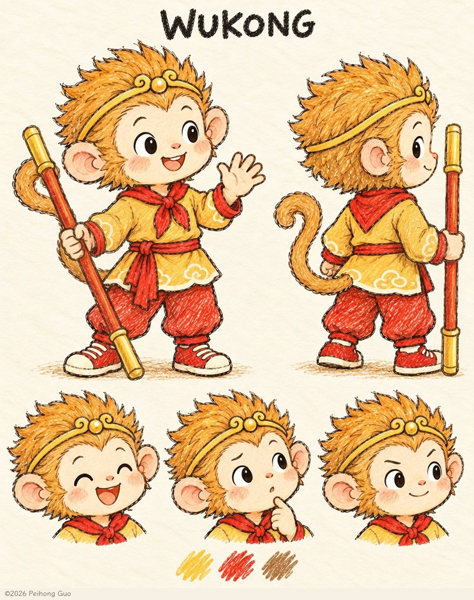
我们的小主角
孙悟空 / Wukong
好奇、爱玩、会有点急，也愿意认真练习。小失误让他好笑，不妨碍他有尊严地学习；失败时可以失落和休息。
 悟空和朋友们
悟空和朋友们走进我们睡前故事的朋友们——每位一张形象图，几句小小的介绍。
这些朋友已经走进了我们书架上的绘本。

好奇、爱玩、会有点急，也愿意认真练习。小失误让他好笑，不妨碍他有尊严地学习；失败时可以失落和休息。
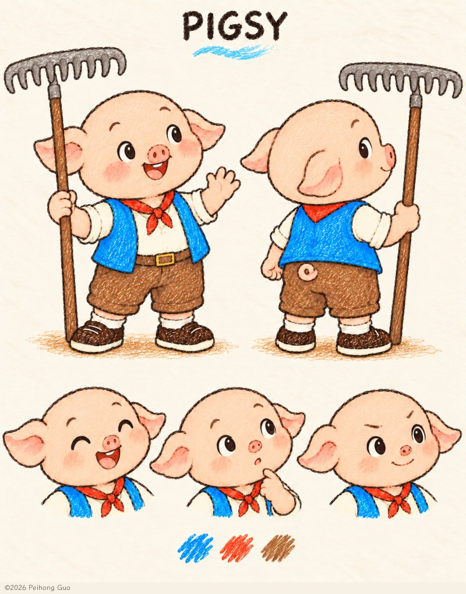
亲切、乐于陪伴，喜欢小点心和舒适的休息。会逗人笑，也会扶住车座、陪朋友休息。
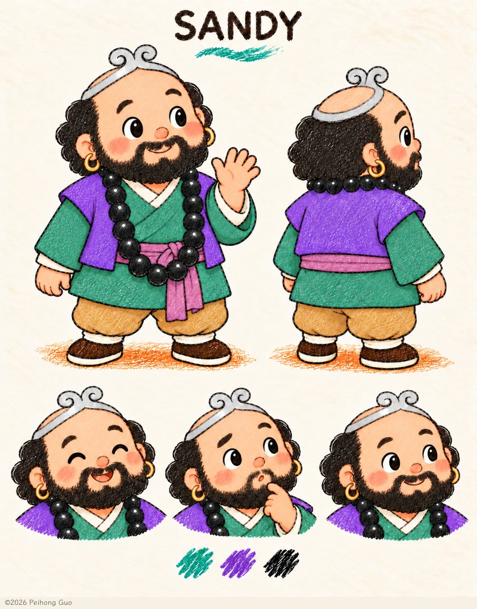
稳稳当当、细心体贴的成人朋友，喜欢把小事提前准备好、把东西收拾妥当；偶尔准备得太周全，会笑着调侃自己。他支持朋友自己尝试，也愿意求助和学习，不说教、不逞能。
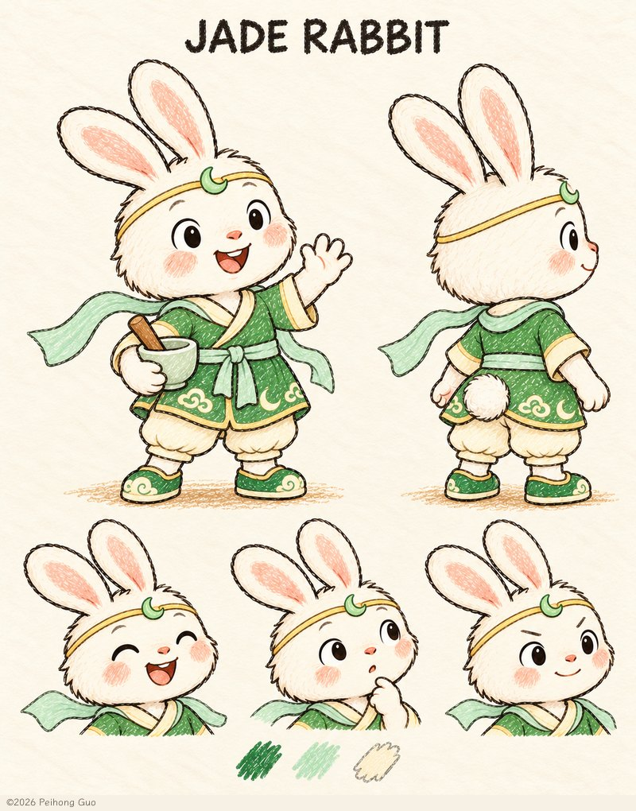
她轻快、友善、爱运动，喜欢骑车和滑冰，也会留心月亮和身边的小形状。她有自己的主意，会用温柔有趣的鼓励支持伙伴，也愿意放慢脚步等朋友跟上。
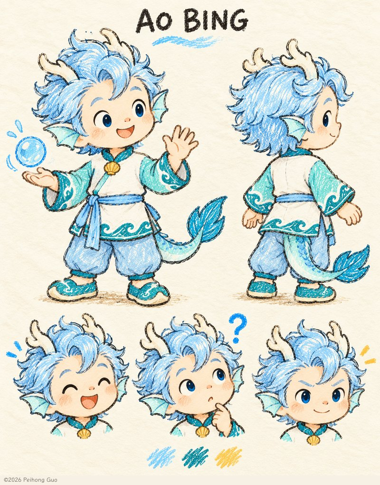
温柔好奇，喜欢观察水和身边的小细节。有时会犹豫，但会慢慢学着说出想法、勇敢尝试；安静而亲近朋友。
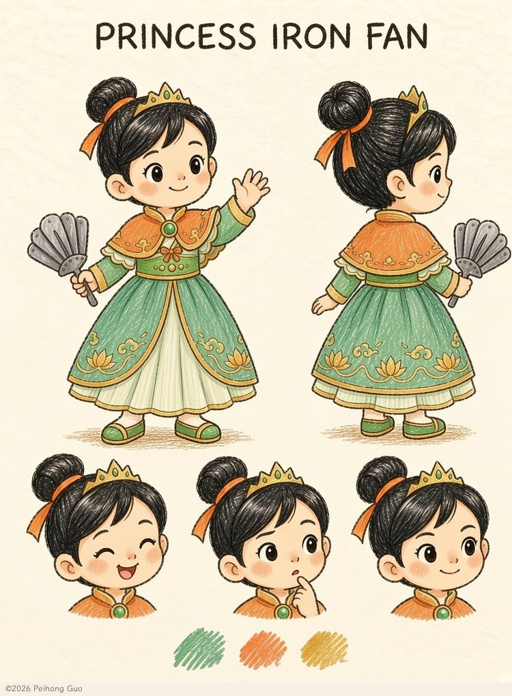
热情、爽快，喜欢风筝和户外游戏。她总想马上帮忙，偶尔会扇得太用力，也愿意停下来听朋友说完，再轻轻试一次。
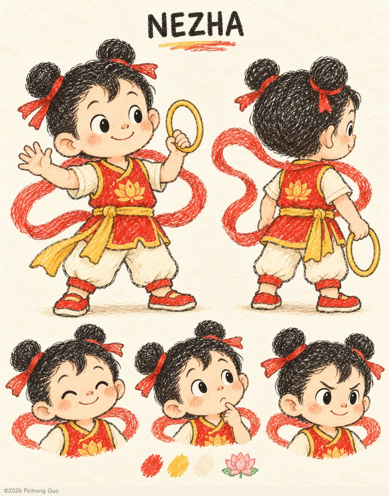
活泼勇敢，看到新事物很想马上试试。有时动作比思考快，会学习先停一下、听清楚、接受帮助；并非总比悟空更厉害。
这几位朋友已经画好了，正在等待属于自己的第一个故事——他们还没有出现在已出版的书里。
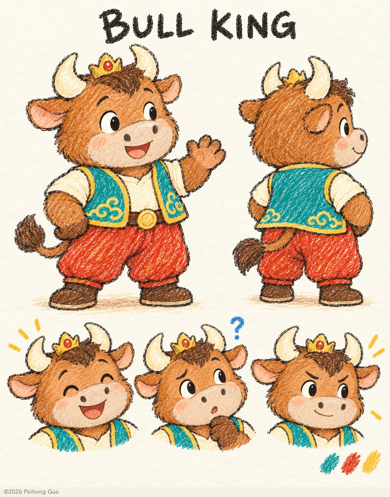
憨厚热心，愿意帮忙，有时会为自己的力气小小得意。他也会遇到不会的事，懂得请教；逐渐学会动作轻一点、耐心多一点。
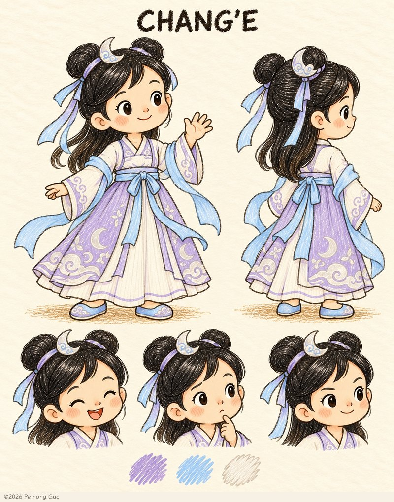
温柔友善，喜欢观察月亮、分享想法，并愿意和朋友一起练习。她不会因身份或月亮魔法而高人一等。
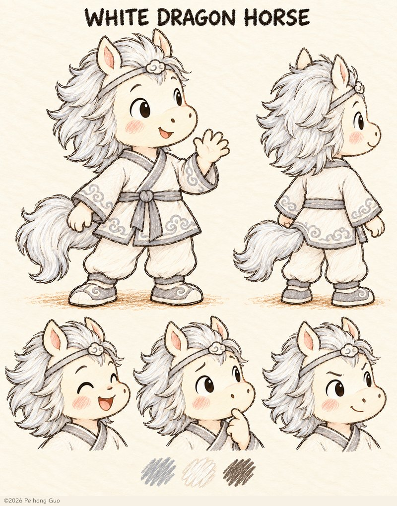
温和活泼，喜欢和朋友一起玩，也爱轻快地小跑一段。珍惜整齐的鬃毛，风吹乱时会笑着整理；会表达自己的想法和需要，也可以选择休息。
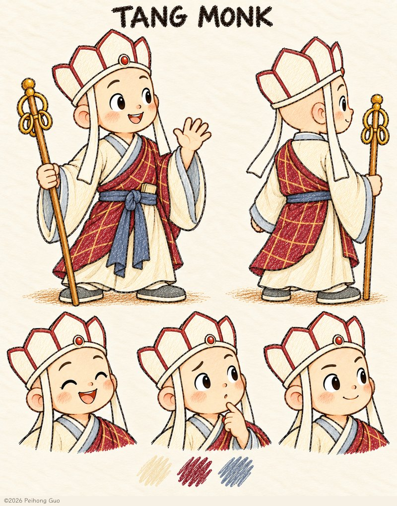
温和、耐心，也充满好奇。他喜欢先观察、听听朋友的想法，再陪大家一步一步尝试；遇到新鲜事，也乐意一起学。